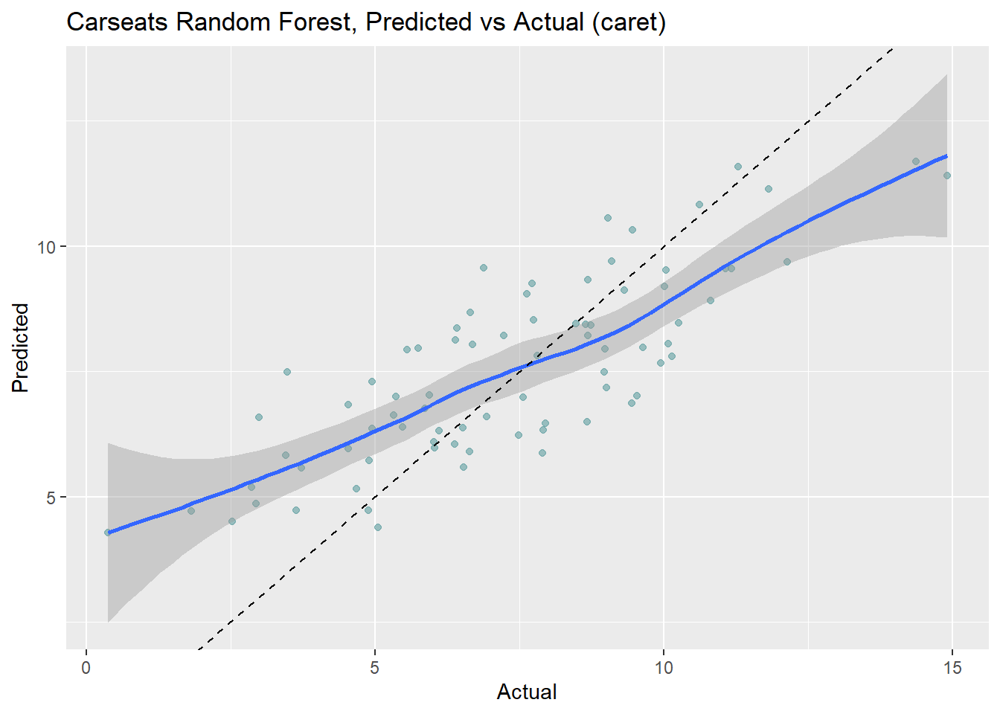
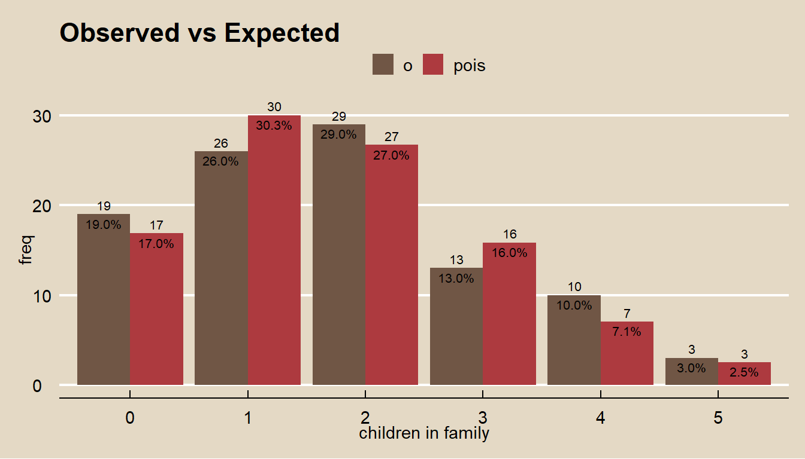

9.6 Summary
resamps <- resamples(list('CART' = oj_mdl_cart2,
'Bagging' = oj_mdl_bag,
'Random Forest' = oj_mdl_bag,
'GBM' = oj_mdl_gbm))
summary(resamps)##
## Call:
## summary.resamples(object = resamps)
##
## Models: CART, Bagging, Random Forest, GBM
## Number of resamples: 10
##
## Accuracy
## Min. 1st Qu. Median Mean 3rd Qu. Max. NA's
## CART 0.7058824 0.7936047 0.8314402 0.8120883 0.8441176 0.8837209 0
## Bagging 0.7294118 0.7888509 0.8011628 0.7945774 0.8116145 0.8255814 0
## Random Forest 0.7294118 0.7888509 0.8011628 0.7945774 0.8116145 0.8255814 0
## GBM 0.7058824 0.8139535 0.8439588 0.8285045 0.8651505 0.8941176 0
##
## Kappa
## Min. 1st Qu. Median Mean 3rd Qu. Max. NA's
## CART 0.3773806 0.5635201 0.6386667 0.6011446 0.6743840 0.7517321 0
## Bagging 0.4334975 0.5540262 0.5716526 0.5653649 0.6090299 0.6345658 0
## Random Forest 0.4334975 0.5540262 0.5716526 0.5653649 0.6090299 0.6345658 0
## GBM 0.3703704 0.6006641 0.6738871 0.6365233 0.7203674 0.7783251 0
 Compute the differences among models and use a t-test to evaluate the null hypothesis that there is no difference between models.
Compute the differences among models and use a t-test to evaluate the null hypothesis that there is no difference between models.
##
## Call:
## diff.resamples(x = resamps)
##
## Models: CART, Bagging, Random Forest, GBM
## Metrics: Accuracy, Kappa
## Number of differences: 6
## p-value adjustment: bonferroni##
## Call:
## summary.diff.resamples(object = difValues)
##
## p-value adjustment: bonferroni
## Upper diagonal: estimates of the difference
## Lower diagonal: p-value for H0: difference = 0
##
## Accuracy
## CART Bagging Random Forest GBM
## CART 0.01751 0.01751 -0.01642
## Bagging 0.5526 0.00000 -0.03393
## Random Forest 0.5526 NA -0.03393
## GBM 0.7832 0.1218 0.1218
##
## Kappa
## CART Bagging Random Forest GBM
## CART 0.03578 0.03578 -0.03538
## Bagging 0.5617 0.00000 -0.07116
## Random Forest 0.5617 NA -0.07116
## GBM 0.7735 0.1466 0.1466
resamps <- resamples(list('CART' = cs_mdl_cart2,
'Bagging' = cs_mdl_bag,
'Random Forest' = cs_mdl_bag,
'GBM' = cs_mdl_gbm))
summary(resamps)##
## Call:
## summary.resamples(object = resamps)
##
## Models: CART, Bagging, Random Forest, GBM
## Number of resamples: 10
##
## MAE
## Min. 1st Qu. Median Mean 3rd Qu. Max. NA's
## CART 1.3654588 1.5880059 1.7313313 1.6954527 1.799792 2.064407 0
## Bagging 0.9303614 1.1254345 1.3464588 1.3434268 1.571260 1.737744 0
## Random Forest 0.9303614 1.1254345 1.3464588 1.3434268 1.571260 1.737744 0
## GBM 0.7158107 0.8573375 0.9156746 0.9384418 1.043579 1.113679 0
##
## RMSE
## Min. 1st Qu. Median Mean 3rd Qu. Max. NA's
## CART 1.694854 1.902683 2.038878 2.055676 2.178660 2.496287 0
## Bagging 1.209929 1.405502 1.693264 1.681889 1.979521 2.069958 0
## Random Forest 1.209929 1.405502 1.693264 1.681889 1.979521 2.069958 0
## GBM 0.930552 1.082300 1.159712 1.161540 1.271790 1.390241 0
##
## Rsquared
## Min. 1st Qu. Median Mean 3rd Qu. Max. NA's
## CART 0.3858765 0.4977272 0.5185928 0.5027431 0.5272691 0.5852449 0
## Bagging 0.5280595 0.6322136 0.6805770 0.6752390 0.7281293 0.7848460 0
## Random Forest 0.5280595 0.6322136 0.6805770 0.6752390 0.7281293 0.7848460 0
## GBM 0.8176434 0.8319850 0.8536650 0.8488463 0.8628293 0.8721381 0
 Compute the differences among models and use a t-test to evaluate the null hypothesis that there is no difference between models.
##
## Call:
## diff.resamples(x = resamps)
##
## Models: CART, Bagging, Random Forest, GBM
## Metrics: MAE, RMSE, Rsquared
## Number of differences: 6
## p-value adjustment: bonferroni##
## Call:
## summary.diff.resamples(object = difValues)
##
## p-value adjustment: bonferroni
## Upper diagonal: estimates of the difference
## Lower diagonal: p-value for H0: difference = 0
##
## MAE
## CART Bagging Random Forest GBM
## CART 0.352 0.352 0.757
## Bagging 0.0004408 0.000 0.405
## Random Forest 0.0004408 NA 0.405
## GBM 1.134e-06 0.0036058 0.0036058
##
## RMSE
## CART Bagging Random Forest GBM
## CART 0.3738 0.3738 0.8941
## Bagging 0.0001734 0.0000 0.5203
## Random Forest 0.0001734 NA 0.5203
## GBM 3.338e-07 0.0003272 0.0003272
##
## Rsquared
## CART Bagging Random Forest GBM
## CART -0.1725 -0.1725 -0.3461
## Bagging 0.0001668 0.0000 -0.1736
## Random Forest 0.0001668 NA -0.1736
## GBM 1.468e-07 0.0006759 0.0006759